Interactive onboarding walkthrough
Open Developer tools → Onboarding walkthrough — start here. This is a fresh in-memory rehearsal; normal New Game has not changed. The guide runs real Hut construction, one paid expedition countdown and Woodcutter construction. Whole-forest discovery is a review proposal applied only to this disposable copy.
Drag the building or tap an open tile, then confirm. Next suggested site chooses another authoritative-valid site. Skip/reopen preserves this temporary progress. Explicit time advance is labeled; existing saves and R2-07 remain unchanged. Owner requested refinement before normal integration; no approval is inferred.
Earlier visual/fog comparison · Verification ledger
Phone
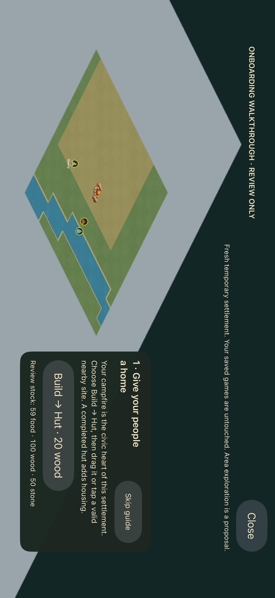
walkthrough 01 hut guidewalkthrough 02 expedition guide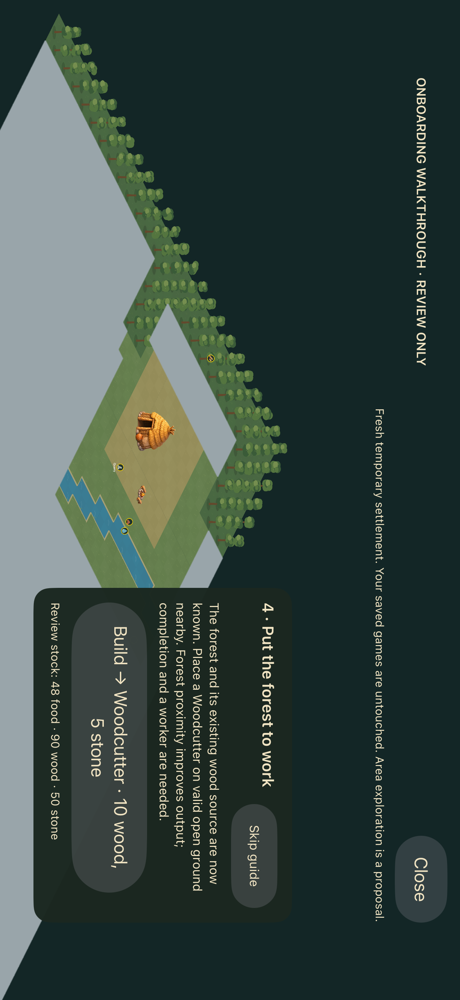
walkthrough 03 forest woodcutter guide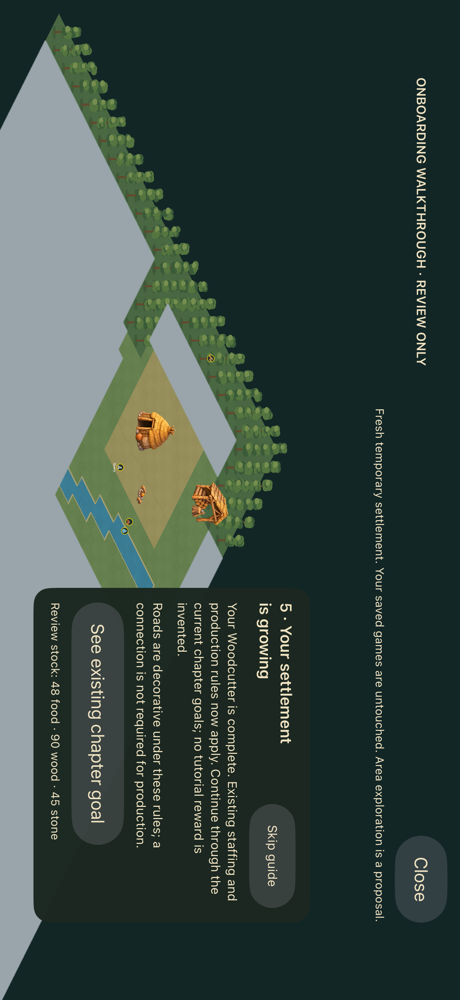
walkthrough 04 goals handoff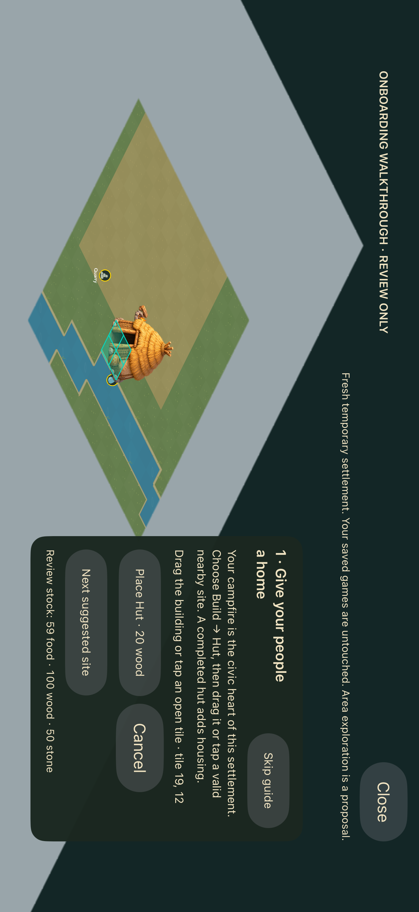
walkthrough placement drag suggestMini
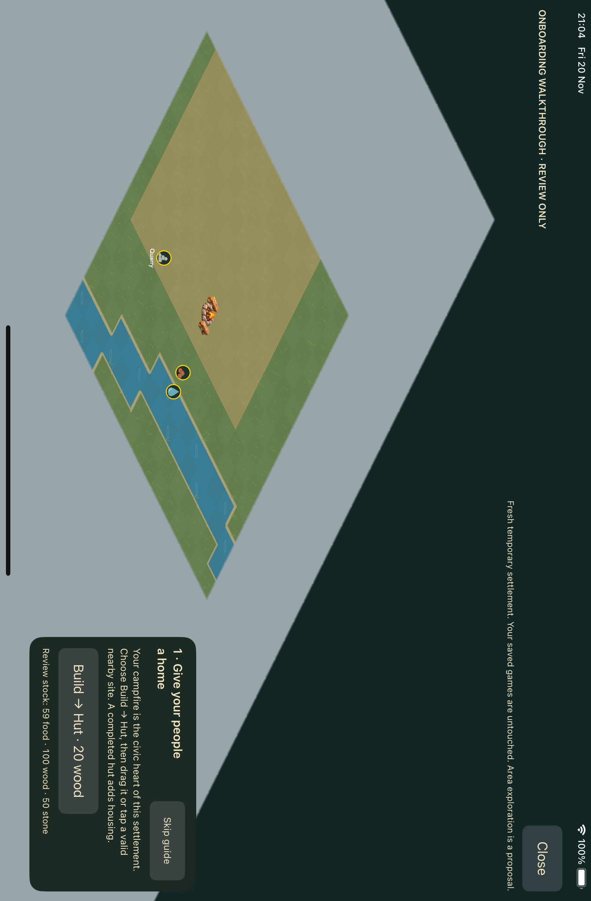
walkthrough 01 hut guide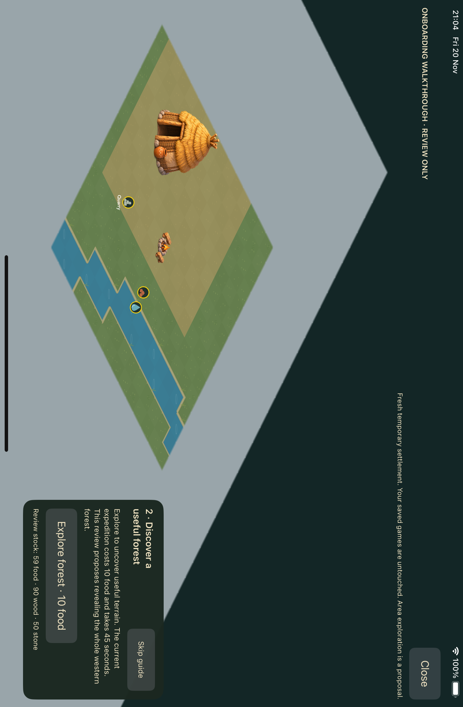
walkthrough 02 expedition guide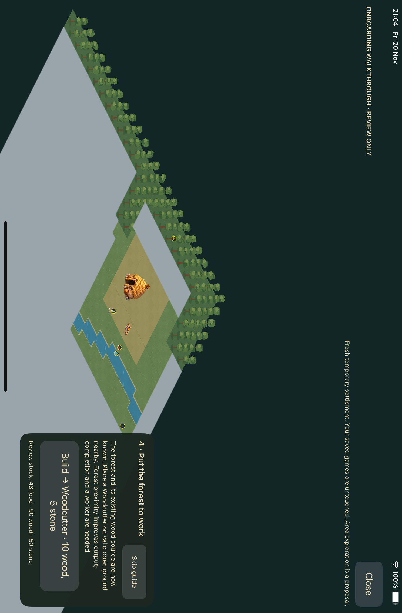
walkthrough 03 forest woodcutter guide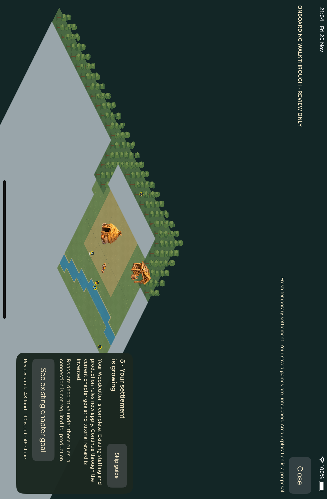
walkthrough 04 goals handoff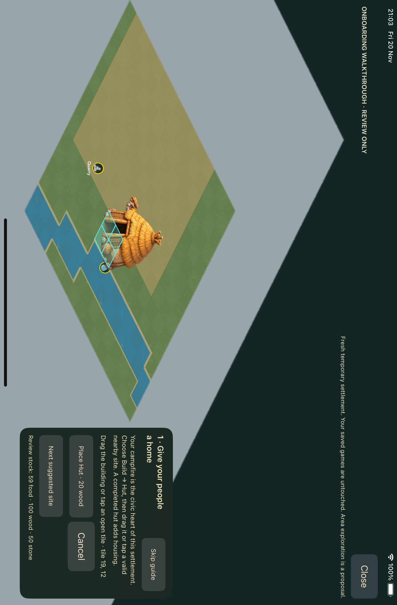
walkthrough placement drag suggestPro
walkthrough 01 hut guide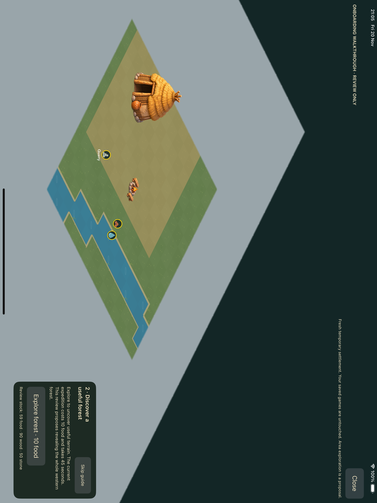
walkthrough 02 expedition guide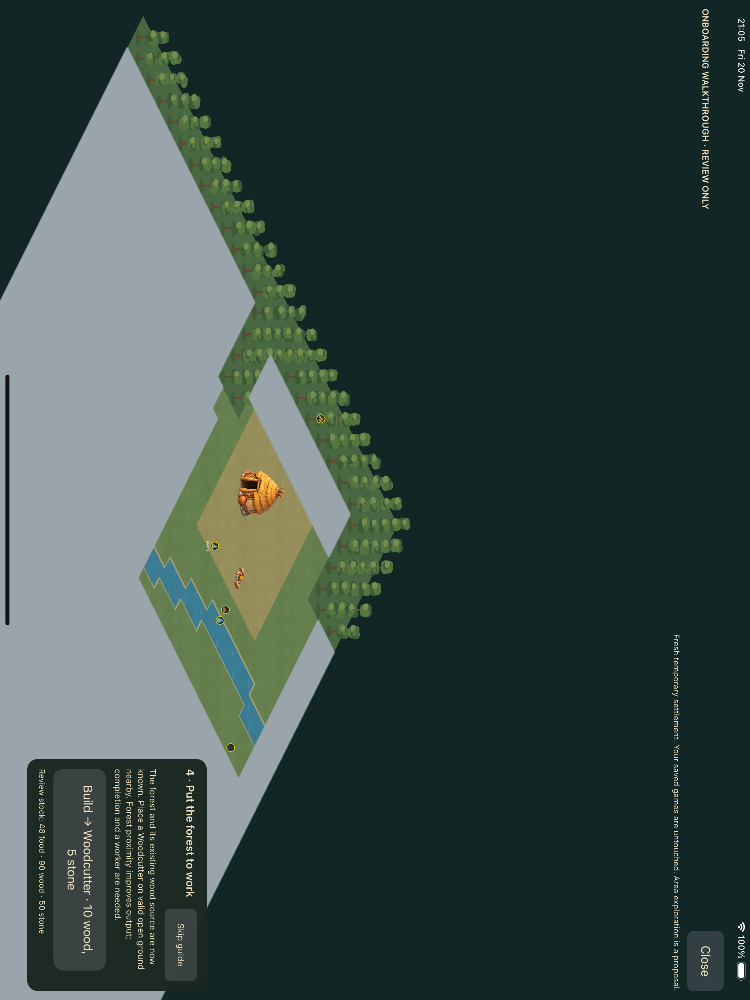
walkthrough 03 forest woodcutter guide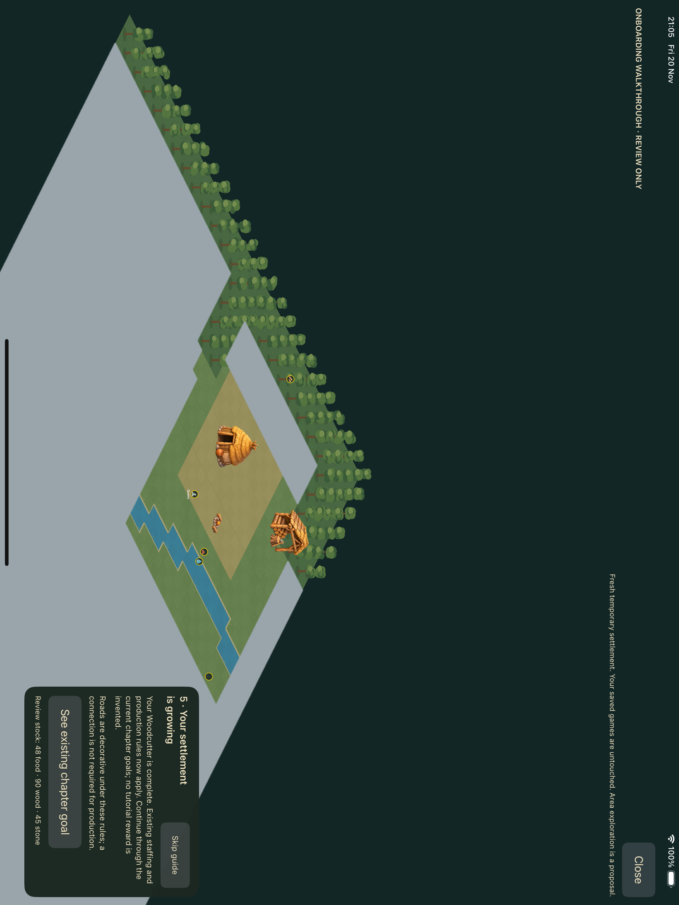
walkthrough 04 goals handoff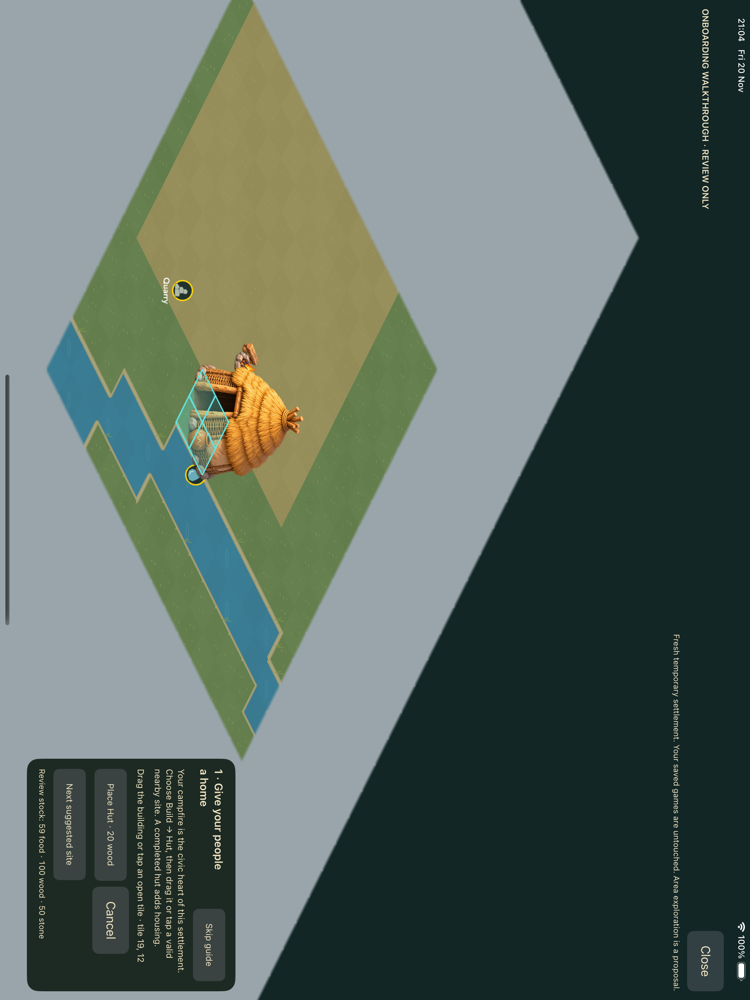
walkthrough placement drag suggestCharacter and wildlife concepts — unregistered frames, no runtime export
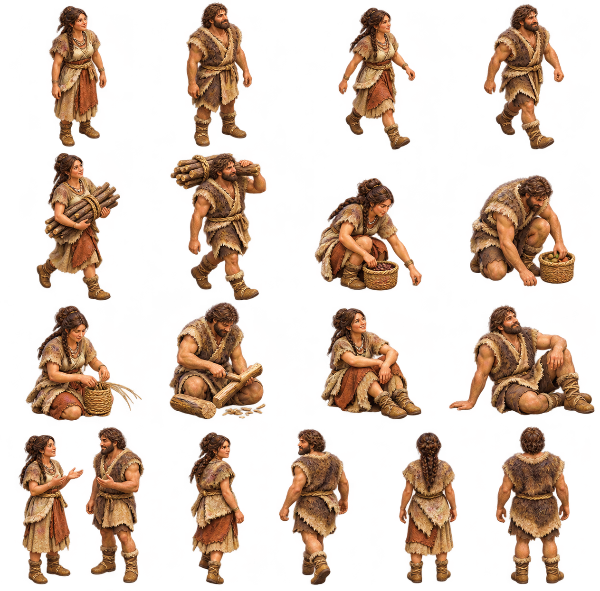
villagers-review-v1 wildlife-review-v1
wildlife-review-v1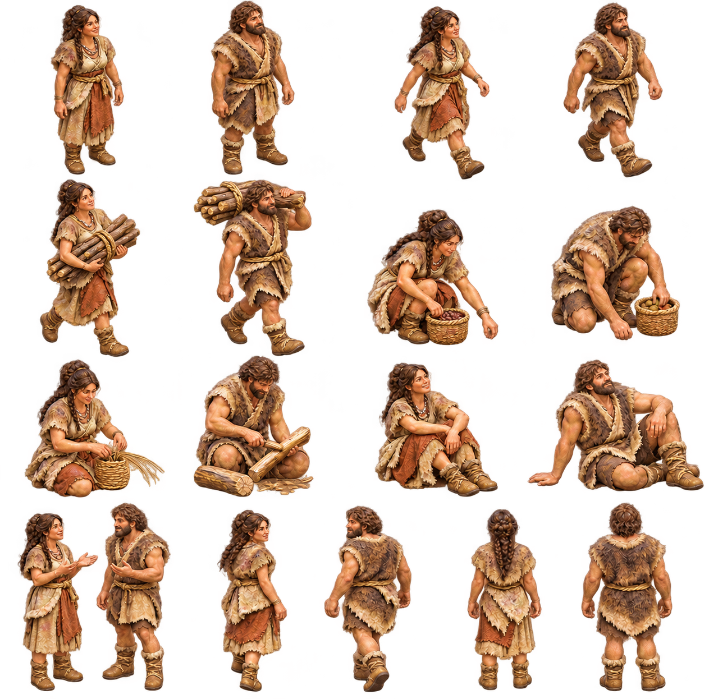
villagers-review-v2 wildlife-review-v2
wildlife-review-v2